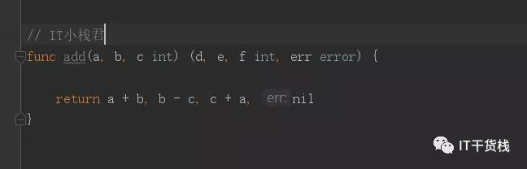

Hello 各位小伙伴大家好，我是小栈君，假期一眨眼就过去了。不知道大家玩的是否开心呢？
上次我们讲到了关于Go语言的流程控制，小栈君也希望小伙伴跟着小栈君一步一个脚印的敲一下代码，相互进步。本期我们要分享的Go语言系列之函数。
一、什么是函数？
函数是指一段在一起的、可以做某一件事儿的程序。也叫做子程序、（OOP中）方法。
一个较大的程序一般应分为若干个程序块，每一个模块用来实现一个特定的功能。所有的高级语言中都有子程序这个概念，用子程序实现模块的功能。
在C语言中，子程序的作用是由一个主函数和若干个函数构成。由主函数调用其他函数，其他函数也可以互相调用。同一个函数可以被一个或多个函数调用任意多次。
在程序设计中，常将一些常用的功能模块编写成函数，放在函数库中供公共选用。要善于利用函数，以减少重复编写程序段的工作量
二、函数之函数定义
所以综上所述我们可以知道函数构成代码执行的逻辑结构。在Go语言中，函数的基本组成为：关键字func、函数名、参数列表、返回值、函数体和返回语句。
所以函数的通用格式如下：

函数定义说明：
func：函数由关键字 func 开始声明
funcName：函数名称，根据约定，函数名首字母小写即为private，大写即为public ，注意之前小栈君提醒过各位，在go语言中是区分大小写的。所以这里的add是仅本类中使用。
参数列表：函数可以有0个或多个参数，参数格式为：变量名 类型，如果有多个参数通过逗号分隔，不支持默认参数
返回类型：
① 上面返回值声明了两个变量名d和e、f、err(命名返回参数)，这个不是必须，可以只有类型没有变量名
② 如果只有一个返回值且不声明返回值变量，那么你可以省略，包括返回值的括号
③ 如果没有返回值，那么就直接省略最后的返回信息
④ 如果有返回值， 那么必须在函数的内部添加return语句
三、函数之自定义函数
在所有的编程中我们都避免不了自定义函数也称之为方法。以此来确保我们业务的顺利进行，自定义函数的好处就是可以复用，避免代码臃肿，逻辑混乱，提高代码的阅读性。
所以在go语言的自定义函数中我们可以分为以下几个种类,无参无返回值、有参无返回值、无参有返回值、有参有返回值这几种。
无参无返回值
func Test() { //无参无返回值函数定义
fmt.Println("hello i am itCarry")
}
func main() {
Test() //无参无返回值函数调用
}有参无返回值
func Test01(a int, b int) { //方式1
fmt.Printf("a = %d, b = %d\n", a, b)
}
func Test02(a, b int) { //方式2, v1, v2都是int类型
fmt.Printf("a = %d, b = %d\n", a, b)
}
func main() {
Test01(10, 20) //函数调用
Test02(11, 22) //函数调用
}不定参数列表
所谓的不定参数列表就是指传参的个数不确定，有可能是一个或多个，所以为了满足这点我们需要将传参设定为不定参数，和其他编程语言一样，我们这里用三个点表示(即...)，记住要用英文的哦。
知识点：形如...type格式的类型只能作为函数的参数类型存在，并且必须是最后一个参数
func Test(args ...int) {
for _, n := range args { //遍历参数列表
fmt.Println(n)
}
}
func main() {
//函数调用，可传0到多个参数
Test()
Test(1)
Test(1, 2, 3, 4)
}
四、函数之不定参数传递
// 定义函数 一
func MyFunc01(args ...int) {
fmt.Println("MyFunc01")
for _, n := range args { //遍历参数列表
fmt.Println(n)
}
}
// 定义函数 二
func MyFunc02(args ...int) {
fmt.Println("MyFunc02")
for _, n := range args { //遍历参数列表
fmt.Println(n)
}
}
// 定义函数 三
func Test(args ...int) {
MyFunc01(args...) //按原样传递, Test()的参数原封不动传递给MyFunc01
MyFunc02(args[1:]...) //Test()参数列表中，第1个参数及以后的参数传递给MyFunc02
// PS: 这里运用了一个之后的知识点 就是关于Go语言的切片
}
// 调用函数 三
func main() {
Test(1, 2, 3) //函数调用
}所以我们也是可以看到函数中可以调用函数，构成新的函数。所以我们只要妥善处理好函数之间的关系我们就可以构建出高效率、高质量、高可用的代码啦。
好啦，今天的分享就到这里了，对于这一方面还需要各位小伙伴下来后好好琢磨一下。
▼
往期精彩回顾
▼
Go语言入门教程(一)
Go语言入门教程（二）
Go语言入门教程(三)
Go语言系列教程（四）
Go语言系列教程（五）
Go语言系列教程（六）
这里每天会分享包含java，go，Python，大数据，人工智能的相关干货，我们一起提高，一起进步。我是小栈君，我们明天再见，拜了个拜。